Introduccion a visualizacion de datos con R
Switch
to English  | Mudar
para Português
| Mudar
para Português 
# Cargamos las librerias
library(ggplot2) # para los graficos
library(dplyr) # para manipulacion de datos
library(STNet) # para los datos
# Cargamos los datos de la libreria STNet
data('captures') # Cargamos los datos
head(captures) # imprimimos las primeras observaciones## municipality location Loc date year captures
## 1 Temascaltepec San Pedro Tenayac Cueva el Uno 11/06/14 2014 6
## 2 Tlatlaya Nuevo Copaltepec La alcantarilla 12/05/05 2005 3
## 3 Tlatlaya Nuevo Copaltepec La alcantarilla 12/05/07 2007 30
## 4 Tlatlaya Nuevo Copaltepec La alcantarilla 12/03/09 2009 0
## 5 Tlatlaya Nuevo Copaltepec La alcantarilla 10/08/10 2010 4
## 6 Tlatlaya Nuevo Copaltepec La alcantarilla 16/05/11 2011 4
## treated lat lon trap_type
## 1 6 18.03546 -100.2095 1
## 2 2 18.40417 -100.2688 1
## 3 29 18.40417 -100.2688 4
## 4 0 18.40417 -100.2688 3
## 5 3 18.40417 -100.2688 1
## 6 3 18.40417 -100.2688 21 Graficos en R
Por default, R incluye múltiples funciones para crear una variedad de
figuras, pero el código puede volverse complejo y difícil de leer
mientras mas detalle agregamos a las figuras. ggplot2 es
una librería que proporciona funciones para producir diferentes tipos de
gráficos.
La función ggplot() se usa al principio de del código para
definir la figura, esta funcion establece un lienzo blanco para nuestra
figura. Si llamamos la funcion sin ningun argumento, veremos un lienzo
vacio, por ejemplo:
ggplot()
Podemos agregar poco a poco las capas a nuestro lienzo basado en
nuestros datos que queremos visualizar. De manera similar a los
pipes, podemos conectar las diferentes capas de nuestra figura
con el operador +.
Los componentes basicos que debemos definir para nuestra figura son los siguientes:
- data, el conjunto de datos que usaremos para generar la figura.
- geometry el tipo de grafico que generaremos (p.ej. histograma, barras, puntos, etc..)
- aesthetic (estetica), variables o argumentos que usaremos para mappear los datos con los elementos de la figura (p. ej. ubicacion x/y, color, tamaño, etc…)
Por ejemplo:
ggplot(data = captures) + # Estos son los datos que usaremos
geom_histogram( # Esta es la geometria
aes(x = treated) # La estetuca incluye una sola variable representando el eje x
)
Otros componentes de los graficos se pueden definir para personalizar
nuestras figuras con mas detalle, y cubriremos eso mas adelante.
Como te podras dar cuenta en el ejemplo previo, podemos imprimir
nuestras figuras directamente desde la consola de R, pero una manera de
mantener nuestro trabajo organizado es poner nuestras figuras en
objetos. A continuación voy a crear una lista (list), el
cual es un tipo de objeto especial. Las listas en R son contenedores
para otros objetos:
# Para crear una lista vacia, usamos la function list()
figures <- list()2 Visualizando distribuciones
2.1 Variables continuas
2.1.1 Histogramas
La manera mas simple de visualizar la distribución de una variable
continua es mediante los histogramas. Los histogramas son un tipo
especial de un gráfico de barras en donde la variable es agrupada en
categorías, el eje-x muestra el valor de la categoría en orden ascendete
y el eje-y la frecuencia de observaciones en cada categoría.
Ahora que tenemos nuestra lista vacía para las figuras, podemos guardar
el histograma que crearemos y asignarle un nombre.
Observa que en el siguiente codigo combinaremos
Notice that we will combine the pipes with the ggplot syntax. you can either define the name of the data in the ggplot function or before the function and connect it with a pipe.
figures$histogram <- captures %>% # This is the data we use.
ggplot() + # we set the empty canvas
geom_histogram(aes(x = treated)) # add a layer to visualize a histogram
# we can see our plot by calling the name in our container list
figures$histogram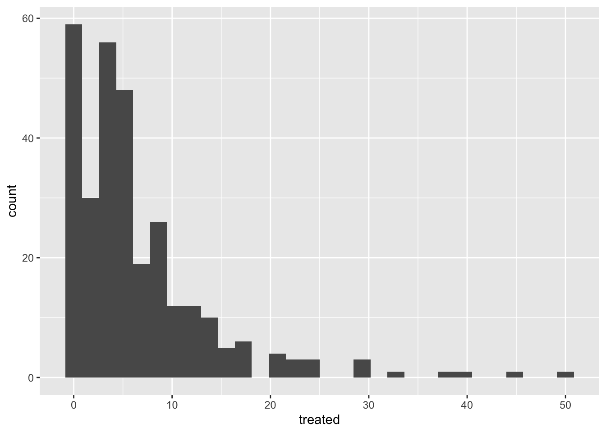
2.1.2 Boxplots
Los graficos de caja (boxplot) son excelentes para mostrar la distribución de una variable continua. Podemos usarlo para mostrar solo una variable o múltiples variables. Es importante ser muy descriptivo al hacer las figuras, la idea de una figura es que pueda explicarse por sí misma. Poco a poco iremos introduciendo funciones para hacer esto y personalizar nuestras figuras.
# crear nuestro boxplot
figures$box <- captures %>%
ggplot() +
geom_boxplot(aes(y = treated))
figures$box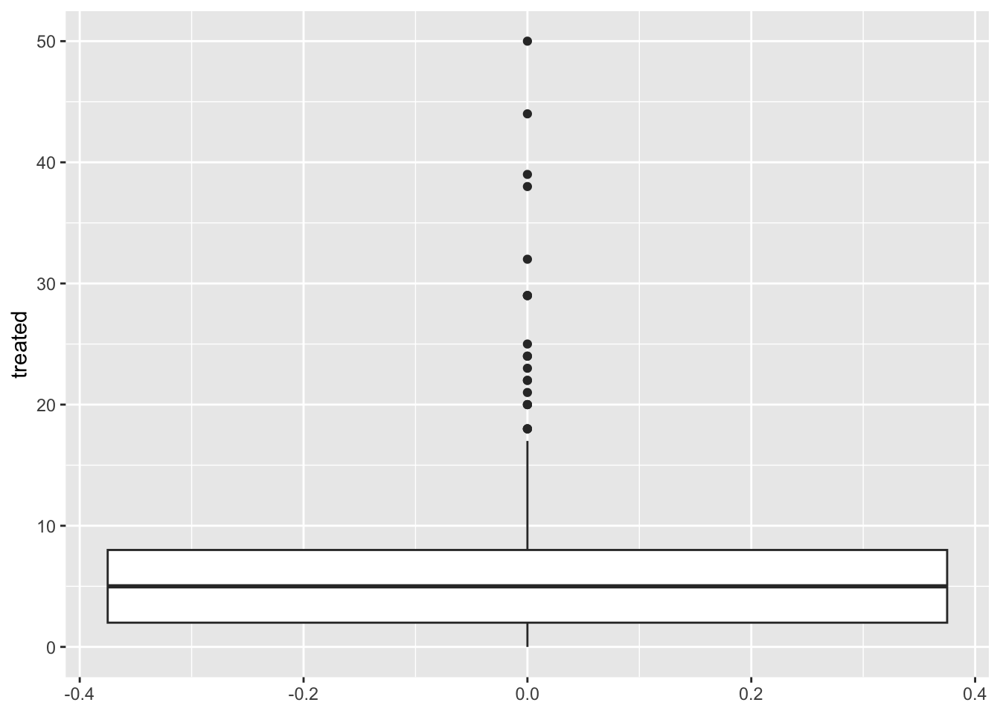
2.2 Variables categoricas
2.3 Graficos de pay… ?
Los gráficos de pay (pie charts) no son muy sencillos de
hacer en ggplot, NO existe ninguna funcione geom_pie. Para hacer esto,
básicamente puedes hacer un gráfico de barras con algunas
especificaciones y luego usar la función coord_polar() que
convertirá las coordenadas de la figura.
captures %>% count(municipality) %>%
ggplot() +
geom_bar(aes(x = 'municipality', y = n, fill = municipality), stat = 'identity') +
coord_polar('y') +
theme_void()
Quizás te preguntes por qué no hay geom_pie en ggplot… A pesar de que los gráficos de pie son una de las figuras más comunes en los medios para datos categóricos, los gráficos circulares han sido criticados por ser difíciles de interpretar cuando se buscan distribuciones, particularmente cuando la distribución de los variable es muy homogénea. Puedes evaluarlo tu mismo en la siguiente figura:

{kind=link}
Algunas alternativas a los gráficos de pay incluyen: gráficos de mosaico y de barras.
2.4 Graficos de mosaico (Treemap)
El principal inconveniente de los gráficos de mosaico es que no hay
una función específica de la biblioteca ggplot2 para hacer
este gráfico, lo que significa que no se integra tan bien con algunas de
las funciones que usaremos en este taller. Podemos usar otra biblioteca
(treemap) para generar esta figura. Usamos la función
treemap() de la misma biblioteca:
library(treemap) # Cargamos la libreria
captures %>% # Estos son nuestros datos
count(municipality, captures) %>% # Contamos cuantos municipios y capturas
treemap(
., # Esta es nuestra data
index = 'municipality', # Definimos la variable indice
vSize = 'n' # Variable que indica la frequencia (tamano de los mozaicos)
)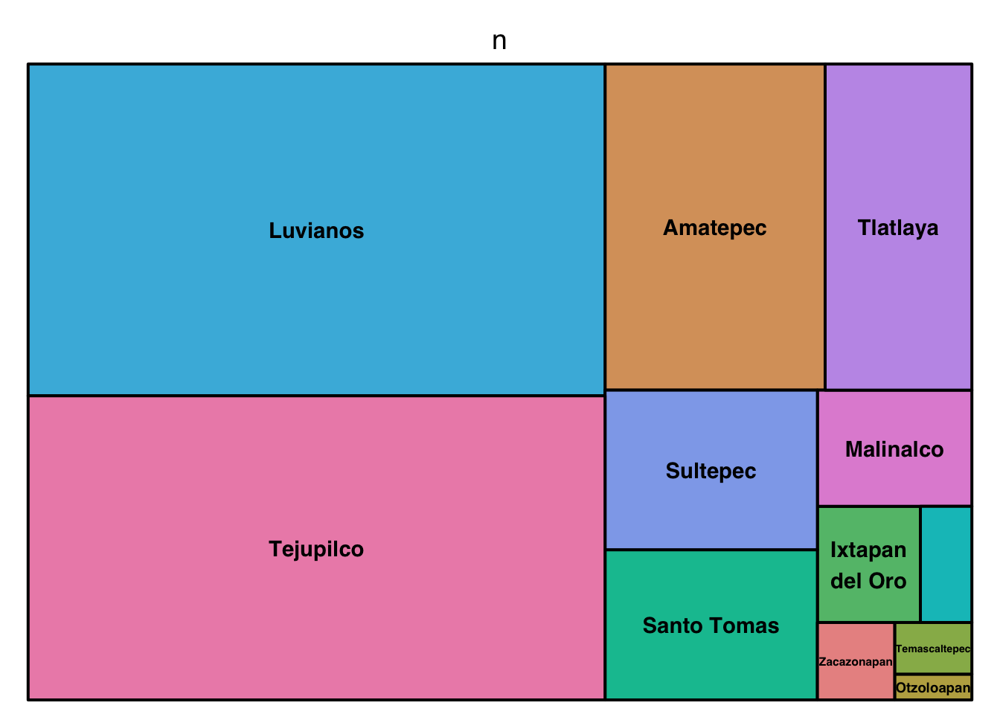
Los treemaps (o mosaicos) pueden incluir multiples jerarquías.
captures %>%
count(municipality, location, captures) %>%
treemap(., index = c('municipality', 'location'), vSize = 'n')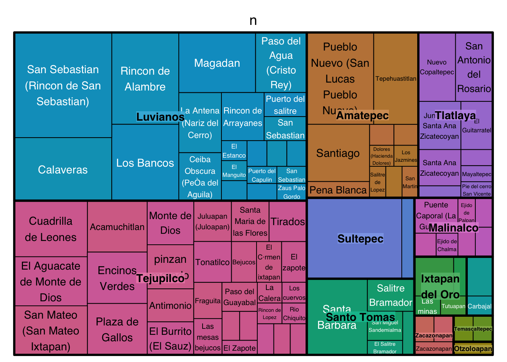
2.5 Graficos de barra (Barplot)
Las graficas de barras son excelentes para representar frecuencias de categorías. En el siguiente ejemplo, primero contaremos el número de pacientes tratados por año y luego lo veremos en un gráfico de barras.
figures$bars <- captures %>%
count(municipality) %>%
ggplot() +
geom_bar(aes(
x = n, # X axis
y = municipality # Y axis
), stat = 'identity') # type of barplot
figures$bars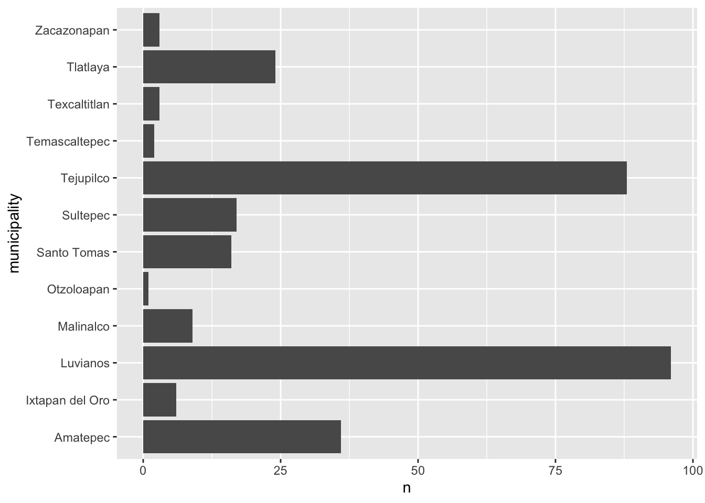
Podemos agregar variables adicionales para indicar la composición
(usando otra variable) de cada uno de los niveles en nuestras figuras.
Por ejemplo, agregaremos la variable trap_type para colorear
las barras en esta figura. Para hacer esto agregamos el argumento
fill=factor(trap_type) a nuestra función
aes()
figures$bars <- captures %>%
count(municipality, trap_type) %>%
ggplot() +
geom_bar(aes(
y = municipality, # X axis
x = n, # Y axis
fill = factor(trap_type) # Variable used for fill
), stat = 'identity') # type of bar plot
figures$bars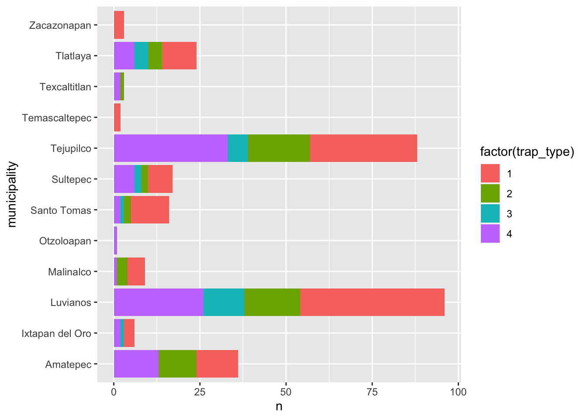
Hay diferentes estrategias para visualizar esto, otro ejemplo sería desglosar la composición en barras individuales como en la siguiente figura, esto puede ser útil para comparar la composición dentro del grupo:
captures %>%
count(municipality, trap_type) %>%
ggplot() +
geom_bar(aes(
y = municipality, # X axis
x = n, # Y axis
fill = factor(trap_type)
), stat = 'identity', position = 'dodge') # type of bar plot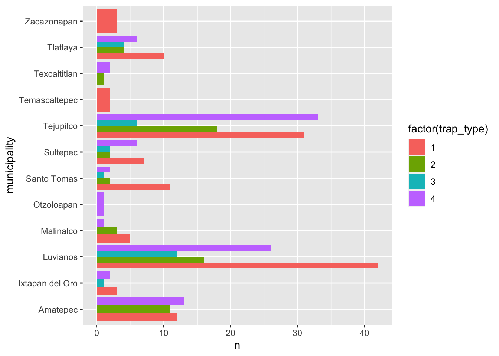
Otra opción es ver la composición como una proporción agregando el
argumento position = 'fill a la función
geom_bar(), observe que esto elimina el sentido del número
de observaciones para la categoría principal (year):
captures %>%
count(municipality, trap_type) %>%
ggplot() +
geom_bar(aes(
y = municipality, # X axis
x = n, # Y axis
fill = factor(trap_type)
), stat = 'identity',
position = 'fill') # type of bar plot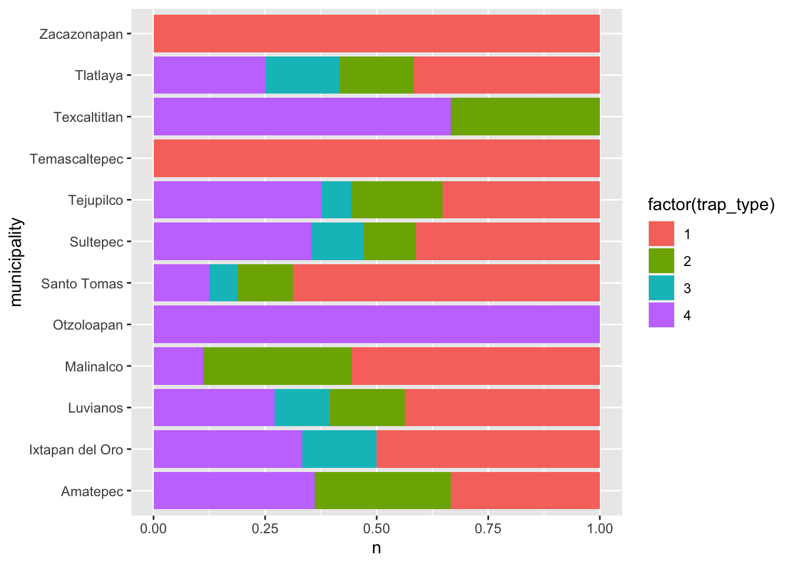
3 Visualizando relaciones
3.1 Graficos de puntos (Scatterplots)
Este es uno de los tipos de gráficos más populares, es útil para representar la relación entre dos variables continuas.
figures$scatter <- captures %>% # Primero empezamos con el nombre de nuestros datos
ggplot() + # Despues ponemos nuestro lienzo
geom_point(aes(x = treated, y = captures)) # Y agregamos una capa de los puntos
figures$scatter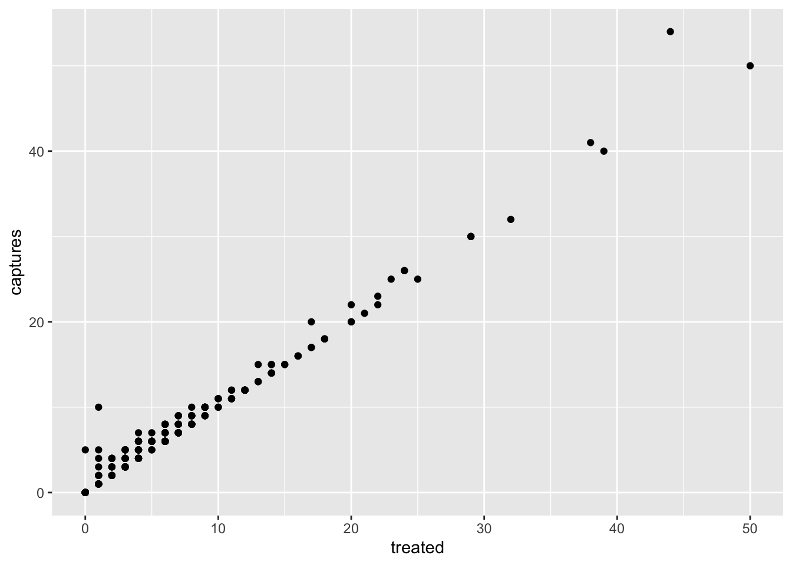
3.2 Mapas de calor (Heatmaps)
Los mapas de calor representan la frecuencia (u otros valores) para una combinación de variables en una matriz. Por ejemplo, podemos visualizar la frecuencia de capturas por tipo de trampa para cada uno de los municipios de nuestros datos:
figures$heatmap <- captures %>% # The data we are using
count(municipality, trap_type) %>% # We count the data by municipality and trap type
ggplot() +
geom_tile(aes(
y = municipality, # y axis
x = factor(trap_type), # x axis
fill = n # The fill for each cell
))
figures$heatmap
3.3 Boxplots (again..)
Los graficos de caja pueden incluir mas de un grupo. Esto es idea para comparar la distribucion de un valor en diferentes grupos.
# Only one variable
figures$box <- captures %>%
ggplot() +
geom_boxplot(aes(x = treated, y = municipality))
figures$box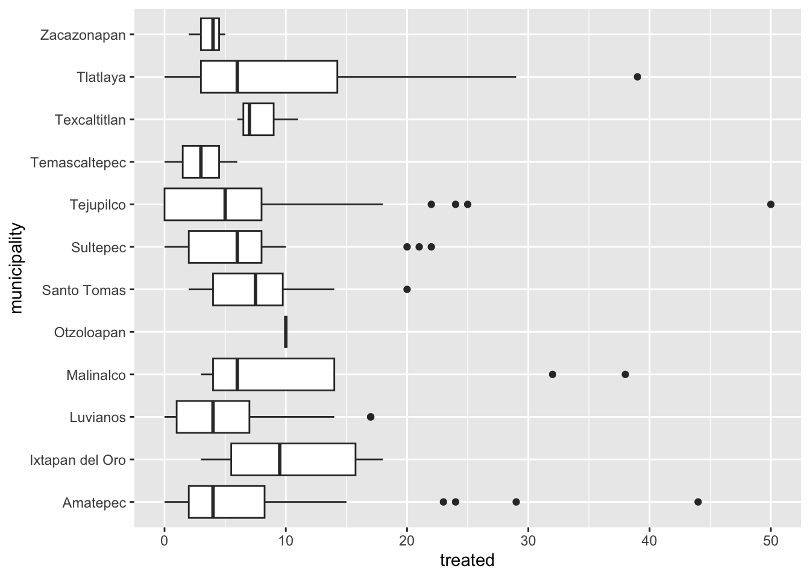
4 Series de tiempo
Para crear una serie temporal, necesitaremos reformatear los datos un
poco para que R pueda hacer lo que queremos. Introduciremos un nuevo
tipo de variable: date. Las variables de fecha son más o
menos lo que suena, es una variable que tiene un formato con año, mes y
día; Hay otras formas de formatear fechas en R, pero esta es la más
común y sencilla.
tCaptures <- captures %>%
mutate(date = as.Date(date, "%d/%m/%y"), # Primero formateamos la variable
month = lubridate::floor_date(date, 'month')) %>% # Después redondeamos la fecha al principio del mes
count(month) # Contamos el numero de observaciones por mesAhora que tenemos nuestras variables en el formato correcto, podemos usarlas como cualquier otra variable.
figures$timeseries <- tCaptures %>%
ggplot() +
geom_line(aes(x = month, y = n))
figures$timeseries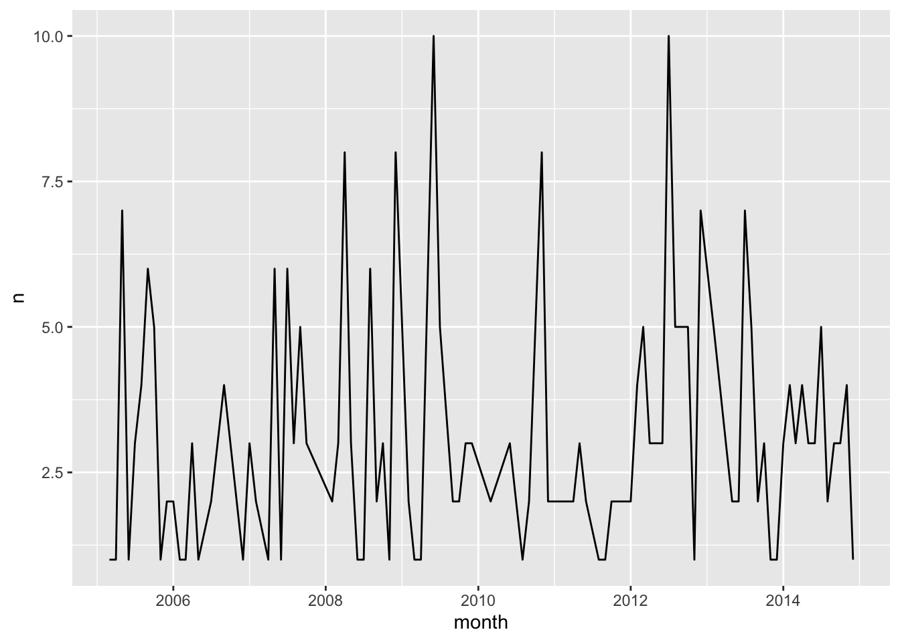
Este ejercicio ha diso desarrollado con contribuciones de: Jose Pablo
Gomez-Vazquez.
Sientase libre de usar los materiales para entrenamiento y sus propios
fines de investigacion. Al usar este material apreciariamos que nos
referencie con los creditos adecuados. Si esta interesado en agendar una
sesion de entrenamiento, contactar a: jpgo@ucdavis.edu